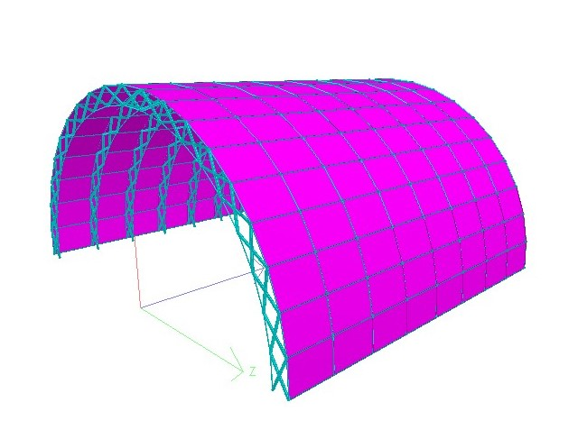

Projects
Wastewater Treatment Plant
I took on this project during my third year of undergraduate program. I worked on this project for 2 semesters for the following outcomes.
- Studying the amount of waste produced by factories in the dedicated area.
- Figuring out the methods for the treatment of this wastewater.
- Providing a plan for such a wastewater treatment plant.
- Creating a design that would redistribute the treated water back for recreation.
Design and Modelling of a Foldable Vault

This was my final year project, where we undertook the task of designing and modelling a vault that could retract and expand at the push of a button and cover an area from weather effects.
- Using AutoCAD to create a rough draft for how the design was going to be.
- Once the design was decided, using trigonometric formulae to calculate the length of each member.
- Calculating different types of loads that would be acting on the structure.
- With the determined member length and loads, creating a model in STAAD Pro with proper loading to stimulate a real-life structure.
- Analysis of said structure while following the Indian Standard rules for design for safety.
- This project ended up winning the award of the best project during our final year Open House competition.